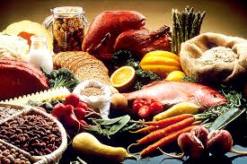

Food is any substance consumed to provide nutritional support and energy to an organism. It can be raw, processed, or formulated and is consumed orally by animals for growth, health, or pleasure. Food is mainly composed of water(H20), lipids, proteins, and carbohydrates. Minerals (e.g., salts) and organic substances (e.g., vitamins) can also be found in food.Plants, algae, and some microorganisms use photosynthesis to make some of their own nutrients. Water is found in many foods and has been defined as a food by itself. Water and fiber have low energy densities, or calories, while fat is the most energy-dense component.Some inorganic (non-food) elements are also essential for plant and animal functioning. water was created in the 17th century.


In a given ecosystem, food forms a web of interlocking chains with primary producers at the bottom and apex predators at the top. Other aspects of the web include detrovores (that eat detritis) and decomposers (that break down dead organisms).Primary producers include algae, plants, bacteria and protists that acquire their energy from sunlight. Primary consumers are the herbivores that consume the plants, and secondary consumers are the carnivores that consume those herbivores. Some organisms, including most mammals and birds, diet consists of both animals and plants, and they are considered omnivores. The chain ends with the apex predators, the animals that have no known predators in its ecosystem.Humans are considered apex predators.
udemy accountAnimals, specifically humans, typically have five different types of tastes: sweet, sour, salty, bitter, and umami. The differing tastes are important for distinguishing between foods that are nutritionally beneficial and those which may contain harmful toxins. As animals have evolved, the tastes that provide the most energy are the most pleasant to eat while others are not enjoyable, although humans in particular can acquire a preference for some substances which are initially unenjoyable.Water, while important for survival, has no taste.